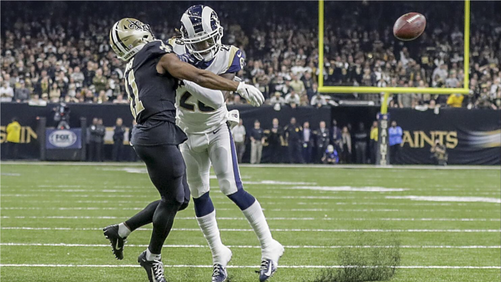
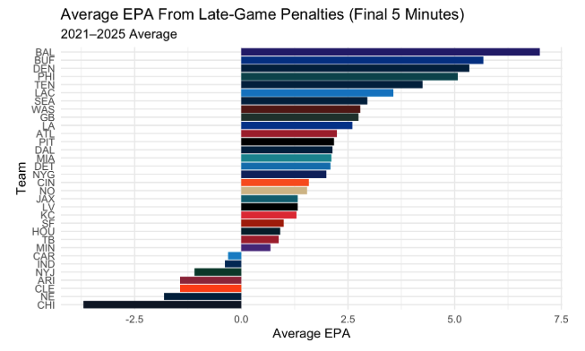
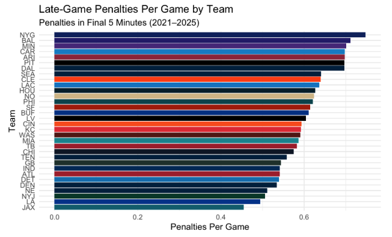
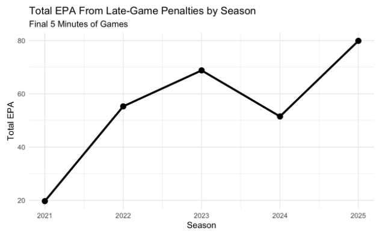
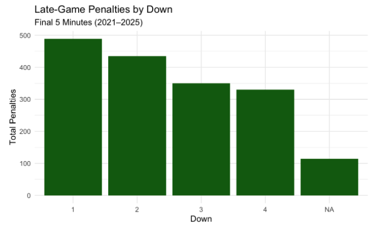
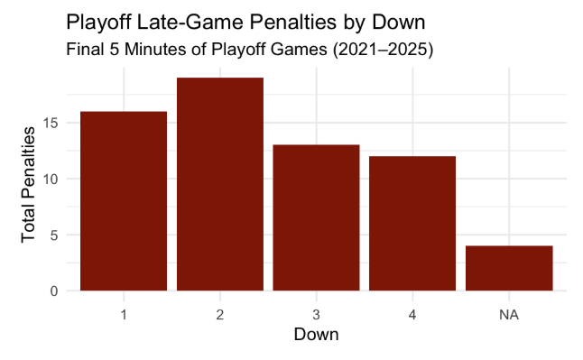
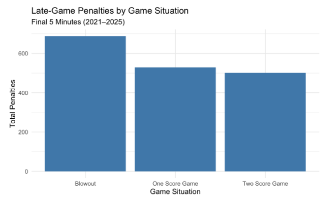
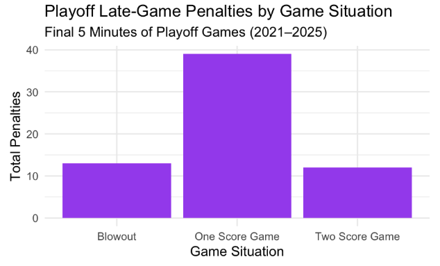
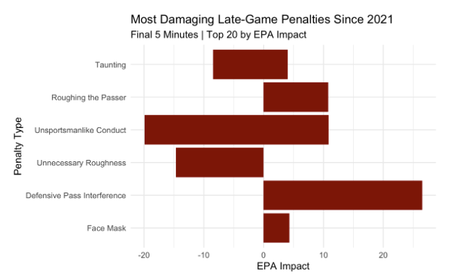
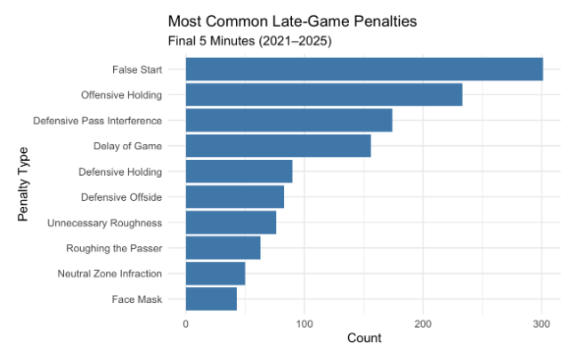

How Much Do Referees Decide NFL Games? A Data-Driven Look at Late-Game Calls and a Possible Solution
By Nihal Mareedu | June 11, 2026

Close games in the NFL are often decided by small margins, often at the expense of officiating errors. Because of this, referees are put under scrutiny when the outcome of a game is left to their decision. While penalties exist to enforce fairness and uphold the rules of the game, their timing and context can dramatically alter a team’s chances of winning. A single “blown call” has often decided important games and has raised an important question. How Much Do Referees Decide NFL Games? Should the NFL review penalty calls? In this article, I will analyze data from the past five NFL seasons to quantify how much influence referees have on NFL games in the final few minutes, and if a penalty review system should be enforced.
To explore this, I analyzed penalties in the final five minutes (the clutch) of NFL games from 2021 to 2025, focusing on their effect using the variable Expected Points Added (EPA). EPA quantifies each play’s impact on the additional expected points added to a team’s total on the drive. A penalty that moves a team closer to scoring range will have a positive EPA, while penalties that push them in the wrong direction will have a negative EPA. By examining how penalties affect EPA across teams, downs, and seasons can help us better understand the officiating impact in the clutch.

Figure 1 shows the average EPA resulting from late-game penalties per team from 2021-2025. The Baltimore Ravens and Buffalo Bills are at the top of the chart with large EPA values, meaning that the penalties in their games led to a significant increase in scoring opportunities. Other teams, including the Chicago Bears and New England Patriots, had a negative EPA, indicating that penalties cost them relatively more scoring opportunities.
The spread of data highlights an important point: penalties do not have the same impact on every team. In some cases, late-game penalties consistently produce advantages and disadvantages for a team’s scoring potential.
One no-call in particular this past season stood out to me. On the final field goal attempt from kicker Tyler Loop against the Steelers in Week 18, with a chance to send the Ravens to the playoffs, the referees missed an important “leverage” personal foul on Ben Skowronek of the Steelers, which would have given the Ravens 15 yards and allowed Tyler Loop to redo his inaccurate attempt. By not calling the penalty, the referees ended up deciding the division title and costing the Ravens a trip to the playoffs. What stands out is that the referees have consistently given the Ravens positive EPA in the clutch over the past five seasons, and based on penalty patterns, this particular penalty should have been called.

While EPA measures the impact of penalties, Figure 2 examines how frequently penalties occur in favor of each team in the final five minutes from 2021-2025. Unlike the previous EPA chart, which showed large variation, the penalty frequency is fairly consistent across NFL teams, suggesting that referees call a similar amount of penalties in the clutch across the league. The key takeaway from this figure is that penalty frequency alone does not explain the refereeing influence that caused the variation in Figure 1.

The third figure displays the total EPA generated by late-game penalties from 2021-2025. This trend raises a lot of questions about the disparity between 2021 and the rest of the years, and whether modern officiating is giving more scoring opportunities. While the observed trend suggests an increase in penalty-driven EPA in recent seasons, the relatively small five-year sample limits the ability to determine whether this pattern actually shows a true shift or normal variation. However, some of this can be explained by defensive pass interference (DPI) calls in 2021. Before the season started, the NFL announced that referees would start calling more DPIs. However, they faced backlash from controversial calls early on in the season and ultimately called fewer penalties for the rest of the season.
In addition, the uptick in EPA can be due to modern NFL offense changes. Teams have become increasingly pass-heavy, leading to more pass interference and roughing the passer calls, penalties that carry a much more significant EPA value than penalties called on running plays. Especially in close games in the 4th quarter, NFL teams will almost certainly pass every play when trailing or tied by one possession.


Figure 4 sorts late-game penalties by down, indicating how the chains can affect officiating. The chart reveals that most penalties occur on first down, and decrease from there, which makes logical sense since there are more first downs in a season than second downs, so on and so forth. Even though third and fourth down penalties are the least common, they are often in fact the most impactful down to have a penalty on. This trend remains fairly consistent in the playoffs, but experiences a slight increment on second down, as represented by Figure 5. One of the most recent controversial calls that come to mind is James Bradberry’s holding penalty on JuJu Smith-Schuster on third down in Super Bowl LVII. Ultimately, the general consensus was that there wasn’t enough contact to allow the referees to make a game-altering penalty decision. This defensive call allowed the Chiefs to burn additional time and kick the game winning field goal.

The sixth figure shows how penalties are distributed among various game situations. Interestingly enough, the most penalties occur in games where the score is far out of one team’s reach. However, an interesting note is that around 50% of games are one score, 30% are two scores, and 20% are blowouts in a season. This may seem surprising, but this could be explained by players being able to perform without the pressure of a close game, leading to more effort and penalties. In these blowout games (games with a 17+ point differential), blown referee calls are negligible to the eventual outcome of the game. While penalty calls in one or two score games are less frequent in an average game, they are still extremely detrimental to a team’s performance.

However, this changes in the playoffs, where a majority of penalties come in one score games (Figure 7). This can be attributed to the fact that all playoff teams are talented on both sides of the ball and are more likely to remain in a competitive game.

The eighth figure focuses on the EPA associated with each type of penalty in late game situations. Defensive pass interference (DPI) is by far the most influential penalty, which is largely explained by the average yardage per DPI. Unlike traditional penalties, which are either 5, 10 or 15 yards, DPIs are called at the spot of the foul, which could often be 30 to 40 yards downfield. Because EPA rewards large gains that shift an offense substantially closer to scoring position, these fouls create volatile increases in expected points. When called in the final few minutes of a game, a DPI often places the offense in immediate scoring range, swinging win probability in their favor and making it arguably the most impactful penalty in football.
Other personal foul penalties, including roughing the passer and unnecessary roughness, also create drastic EPA swings because they award 15 yards and an automatic first down, the most impactful penalty outside of DPI. The figure demonstrates that only a small set of penalties account for a disproportionate share of late-game EPA impacts, making them extremely important to consider when evaluating clutch officiating.

Figure 9 displays penalty frequency compared with total EPA lost or gained. The graph shows that the most common penalties, such as false starts or holding, are not necessarily the most impactful. This builds upon the idea set forth in figure 7, that having more penalties called doesn’t result in EPA swings. Receiving one DPI or personal foul is much more detrimental to a defense than numerous defensive offsides or holding calls.
Given the disproportionate impact of particular penalties, the NFL should consider implementing an expanded replay review system for a select number of high-impact calls during the final five minutes of an NFL game. Instead of reviewing every single penalty, the NFL should focus on specific penalties that drive large EPA swings.
One recent missed call that would’ve altered the result of a game due to the lack of a review system was a facemask call missed on Sam Darnold in the 2024 Vikings-Rams matchup. Instead of receiving an automatic first down, Darnold was sacked by his facemask and ultimately lost the game for the Vikings.
In the past, the NFL has experimented with a defensive pass interference challenge system, which was largely unsuccessful because there were numerous factors to input all at once, and the success rate of overturning a call was quite low. However, it is important to reinforce a similar type of review system for a chance at fair officiating, no matter how low the success rate of a review is. In addition to DPIs, personal fouls and holdings, both defensive and offensive, are penalties to be considered in the review system. The rule for these reviews should be similar to a challenge system, where the call on the field stands unless there is clear and obvious evidence of an overturn. Instead of it being a coach’s challenge, it can be similar to where every play under 2 minutes is automatically reviewed without the need for a challenge flag.
While it is difficult to quantify the percentage of officiating calls that are “blown,” there are many defining instances in a team’s season that are controversially affected by questionable calls. While this fix cannot eliminate every egregious call or missed call, it can certainly help bring balance to modern officiating and crown a fair winner.
Moreover, with the NFL likely deploying “replacement referees”, likely from college football, due to an impending lockout from the National Referee Association, this season might be the best season to experiment with a review system.
By expanding review for high-impact penalties and analyzing officiating data, the NFL can ensure that outcomes of games are determined primarily by the players and not the flags of referees.